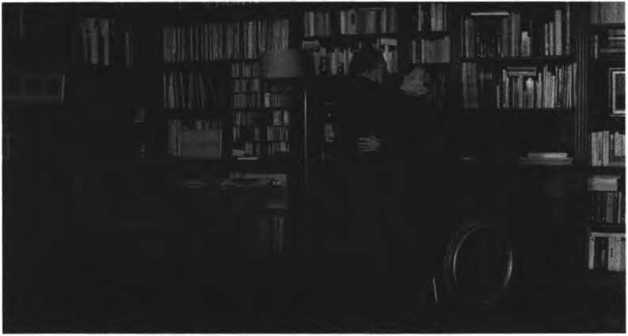

“Piyano Öğretmeni”, 2001
Uygar toplumun, bunu yapanları deli olarak ithaf etmekten öte gidemediğini, kendini kaybettiğini ya da kendini kaybetmenin nasıl bir şey olduğunu itiraf etmesinin mümkün olmadığını ve hatta büyük yıkımların dahi uygarlığı bu itirafa zorlayamadığını söylemek mümkündür. Ancak Haneke, tıpkı öbür benzer sanatçılar gibi uygarlığın içine düştüğü durumu ona zorla kabul ettirmek için çaba sarf etmeye devam etmektedir ki ‘Kurdun Günü’ de sanki bu amaçla yapılmış bir filmdir. Film, sözü edilen uygarlığın huzursuzluklarına dikkat çekerken, bütün günlük pratiklerini makinalara devretmiş, meta üretim sürecine kendisini bırakmış bir neslin, bu sürecin çökmesi ile baş başa kaldığı doğa karşısında ne yapacağını bilmemesini de kendine konu edinmiştir: yani insanlığın deneyim yoksunu olduğu, dünyaya ilk kez ayak bastığı tarih öncesi zamanlara dönüşünü. Haneke’nin kendisi ile yapılan bir söyleşide, gerçekleştirmeyi düşündüğü projelerinden söz ederken de değindiği gibi bu film, “Elektriğin artık olmadığı, suların musluklardan akmadığı bir zamanda, insanların birbirlerine nasıl davranacağına ilişkin bir filmdir... ve aslında insanlığın ilk kaygılarına odaklanmaktadır.” (Akt. Sharrett, 2003: 9).13
‘Kurdun Günü’, öncelikle meta üretim sürecinin sınırlı alanı dışında kalan fiziki ve toplumsal çevre ile ilgili deneyim yoksunluğunun, insanları nasıl çaresiz bırakabileceğini gösterir. Böylece işbölümüne rızanın, toplumsal adalet talebi ile ilişkisine ve işbölümünün son aşamasından ilk zamanlarına dönüş ile birlikte, güçlü olanın adaletinin ‘açıkça’ (modern zamanlardan farklı olarak) nasıl hüküm sürmeye başlayacağından da söz etmiş olur. Kendi kendine işleyen, rasyonel düşünüş tarafından sağlandığı iddia edilen toplumsal adaletin bir şekilde ortadan kalkması ile birlikte, insanlığın kendini tutmasına, içgüdülerini bastırmasına gerek duymayacağı bir toplumsal düzene hemen geri dönüleceği de gösterilmiş olur. Aslında yönetmenin asıl amacı, böyle bir durumda yaşanabilecek olasılıklar üzerinden, bütün insanlığa sirayet etmiş deneyim yoksunluğuna değinmek; rasyonel yaşantının temel içgüdüleri nasıl bastırdığını ve insanlığın saklı içyüzünü, görmeye, göstermeye çalışmaktır: Belki de bunu yaparken bütün olup bitenin bir gün son bulacağını anlatmaktır: “Göreceksin her şey düzelecek. Belki de yarın. Belki yarın büyük bir araba gelecek buraya. Bir spor araba. Bahse girerim seviyorsundur onları. Ve bir genç dışarı çıkıp, her şeyin yoluna girdiğini söyleyecek. Kızarmış güvercinlerimizle, içecek bol bol suyumuz olacak ve belki de ölen tekrar hayata dönecek. Ne dersin?” (“Time of the Wolf’, 2003)
“Kurdun Günü”, 2003
Umutlu da olsa Haneke insanlığın karanlık yüzü ile ilgili söz söylemekten geri durmaz. ‘Saklı’da olduğu gibi politik tarihi anlatıyor gibi görünse de, vurgulamak istenilen asıl sorun başkadır. Sorun, uygarlığın ikiyüzlülüğüyle ilgili olduğu kadar, rasyonel düşünme biçiminin bu ikiyüzlülüğü artık taşıyamaz hale geldiği, çöküşün artık başladığı ve uygarlığın başını yorganının altına saklayarak yaşanılan huzursuzluklardan kaçamayacağı ile ilgilidir. Geçmişi ile hesaplaşan George’un yaptığı aslında uygarlıktan yapılması istenendir. Bu yüzden onun çabası boşunadır. Sakladıkları, sadece onun geçmişine ait değildir, söz konusu olan bütün uygarlığa ait bir huzursuzluktur. Güçlü olan, her zaman ayakta kalmaktadır ama onu güçlü kılan aslında uygarlığı güçsüz bırakır. Uygarlık uğruna vazgeçilenler şöyle dursun, kendini temsil edenleri dahi yarı yolda bırakmıştır: George’un sırtında taşıdığı yük, Paris’in sırtında taşıdığı yüktür. Vaat ettiklerinin aksine, Batı’nın metropollerini inşa eden rasyonalitenin sunduğu mutluluk değil, acıdır. Sınıfsal farklılık gözetmeksizin bütün insanlığa sirayet eden duygu tam da budur: acı ve pişmanlık. Ancak yine de bu duyguları deneyimlemek, unuttuğunu yeniden anmak yerine, uygarlık, kafasını her zaman yaptığı gibi toprağın altına gömmekte (George, filmin sonunda soyunur ve yatağına girerek, yorganın altına gömülür), anlık mutluluk ve hazzı tercih etmektedir. Haneke yine de George’un kendisiyle hesaplaşmasını, uygarlığın kendisi ile hesaplaşması haline dönüştürmekte ve böylece ona sanatın güçsüz’ isyanı içinde bir şans daha vermektedir:
“Saklı sahici düzeyde yapılmış, Fransa’nın Cezayir’i işgaliyle ilgili bir film, fakat daha kişisel bir hikâye üzerinde duran bir film, özellikle kişisel suçluluğun, bu suçluluğu inkâr edişi anlatan bir film. Ana karakter, diğer Arap karakter ile birlikte bir Fransız erkeği. Fakat bu filmi, bireysel suçluluk ile ilgili politik bir hikâye olarak görmekten çok, geçmişin bir hikâyesi olarak görmek açıkçası yanlış olur. Bu yüzden bu filmin hikâyesi politik değil de felsefi olarak nitelenebilir.” (Akt. Sharrett, 2003: 9)14
“Saklı”, 2005
Haneke’nin ‘Saklı’dan sonra çektiği filmi, ‘Beyaz Bant’tır. İlk bakışta Beyaz Bant, özellikle Lukács’ın tarihsel romanı tanımlarken kullandığı nitelikleri taşıyan tarihsel bir film gibi görünür. Birinci Dünya Savaşı’nın hemen öncesinde, feodal ilişkilerin hâkim olduğu bir Alman kasabasında yaşanan olaylar silsilesi, Alman toplumunun küçük bir evreni içinde kurgulanarak anlatılmış gibidir. Üstelik filmin geleneksel anlatı saflarına dâhil edilmesini kolaylaştıracak birçok çatışmayı içinde barındırdığı bile söylenebilir. Filmin erkek kahramanlarından birinin zaman zaman anlatıcı olarak film akışına müdahalesi, heyecanı doruğa taşımayı kolaylaştırır. Ancak heyecan hiçbir zaman doruğa ulaşmayacaktır. Çünkü filmin sorunu anlatısı ile örtüşmeyecek kadar tematiktir. Kasabada yaşanan ve tarihsel olarak zamanın Alman toplumuna özgü gibi gözüken hemen her şey, uygarlığa ait evrensel sorunlardır. Toplumsal adalet talebinin sağlanamadığı bir topluluğun içgüdüsel dışavurumları tartışılmakta, libidonun ve saldırganlığın, uygarlığın yararına, özellikle çalışmanın kutsallığına dem vurarak kullanımının işe yaramazlığına dikkat çekilmektedir. Dürüstlüğü, saflığı, yardımseverliği ve aslında ‘komşunu kendin gibi sev’ düsturu (Freud, 2004: 65) sayesinde toplumsal birliği sağlamaya yönelik çabası ile kasabanın papazı dahi ikiyüzlüdür.
“Beyaz Bant”, 2009
Çocuklarının koluna bağladığı beyaz bandın, bunların hiçbirini sağlamayacağını bilse de, öğrenilmiş çaresizlikle kasabada olan biten aymazlıklara ve istismarlara göz yummaktadır. Aslında bu göz yumuş uygarlığın selameti adına zorunludur, tabi ki, feodal ilişkilerin sürekli yeniden üretilmesi, bu ilişkilerin içinde kendi gücünü koruyabilmesi için. Uygarlık kendini yeniden üretebilmek için mutluluk ve haz arayışının kimi aşırılıklarını (kasaba doktorunun kızma uyguladığı cinsel istismarı, işlenen cinayetleri ve feodal beyin çocuğunun dövülmesini ve doktora düzenlenen yaralama teşebbüsü gibi kötülükleri) görmezden gelebilmektedir. Görmezden gelemeyeceği tek şey, uygarlığın gelişmesi adına rasyonel olanın gerekliliklerinin yerine getirilmemesi, feodal beyin topraklarının işlenmemesi, isteklerinin yerine getirilmemesidir. Bunun olmasıyla en azından göz yumulan ihlallerin bir kısmı daha kendiliğinden ortadan kalkabilir:
“Çalışmanın libido ekonomisindeki önemini kısa bir genel bakış içinde yeterince değerlendirmek mümkün değildir. Bireyi gerçekliğe en fazla bağlayan -en azından gerçekliğin bir parçasına, topluma sağlam bir şekilde yerleştiren- yaşam tekniği çalışmadır. Libidonun narsistik, saldırgan ve hatta erotik bileşenlerinin esaslı bir bölümünü çalışma hayatına ve buna bağlı insan ilişkilerine kaydırma olanağı, çalışma hayatına, toplum içindeki varoluşun korunması ve haklı gösterilmesindeki vazgeçilmezliğinden geri kalmayan bir değer katar.” (Freud, 2004: 40)
Sinemanın naif gücüne sığınan hemen her yönetmenin son sözünü söylediği bir filmi vardır, denir ve bu filmler genellikle öbürlerinin devamı ve hatta onların tamamlayıcısı niteliğindedir. ‘Aşk’ da böyle bir film mi bilinmez ama Haneke, bu son filminde, sanki öbür bütün filmlerinde dillendirdiği modern uygarlık ile ilgili kaygılarını gidermenin; hayal kırıklıklarına son vermenin bir yolu varmış gibi davranır ve bu filmi ile sırasıyla bütün filmlerine sinmiş ve giderek artan umutsuzluğuna son vermek istediğini hissettirir. Mutluluk ve haz arayışının görgüsüzce ve umarsızca dışa vurduğu, saldırganlığın hiç olmadığı kadar arttığı ve hayatın hemen her alanına sirayet eden meydan okumaların insanlığın ilk zamanlarını aratmadığı modern uygarlığın kurtuluş yolunu, iki yaşlı aşığın deneyim yoksunu bırakıldıkları bir sorun karşısında; ölümün acımasız açmazı karşısında takındıkları eşsiz tutum aracılığıyla gösterir. Bu öyle eşsiz bir tutumdur ki George’a yaşlı ve hasta eşini bile öldürtür. Eşini bakım evlerinin ya da hasta bakıcıların insafına bırakmak yerine ve daha fazla acı çekmesine göz yummaktansa kendi acı çekmeyi göze alır. Böylece sorumluluk almanın, karşılıksız ve sonsuz sevginin, romantik bir başkaldırı gibi gözükse de tek çıkar yol olduğunu söylemiş olur. Rasyonel düşünüş ile gerçeklik, gerçeklik ile düşler arasında büyük bir fark olsa da, Anne’in George’a söylediği gibi, tasarılar ve gerçeklik nadiren birbiriyle örtüşse de (“Amour”, 2012), bu başkaldırı tek çıkar yoldur. Yönetmen hastaları hastanelere, yaşlıları bakım evlerine; hastaneleri ve bakım evlerini yaşam alanlarının çok ötesine taşıyarak, görmekten imtina eden modern uygarlığın kurtuluşunu, ‘nesli geçmiş’ yaşlı bir karı-kocanın çabası ile örneklendirir. Üstelik bu yaşlı çiftin rasyonel düşünüşü dünyanın başına musallat eden ve sonrasında kendi suçunun bedelini ödemek zorunda kalan orta sınıfı temsil ediyor olması da oldukça önemlidir. Bauman’ın söylediği gibi, “modern çağın şafağında hızla çoğalan ütopyacı tasarılar, mutsuzluk nedir bilmeyen bir toplumun çerçevesini çizerken, esas olarak orta sınıfa ait düşleri ve özlemleri yansıtmış, dolaşıma sokmuş ve kaydetmiştir.” (Bauman, 2013: 73). Öyleyse yine orta sınıfa ait, düşlerden ve özlemlerden söz etmenin hiçbir zararı yoktur, çünkü Adorno ve Horkheimer’ın da söylediği gibi, İthaka’ya yolculuğu sırasında yoldaşlarından çok daha önce, ilk Odisseas deneyim yoksunu kılınır (Adorno ve Horkheimer, 2010: 86-102). Düşlerine ve özlemlerine kavuşabilmek adına her şeyi göze alarak yola çıkan belki de ilk odur. En azından Walter Benyamin’in deyişiyle kazanın eliyle yazılan tarih böyle söyler (Benjamin, 2006: 40, 42). Haneke de bunu kabul etmiş gibidir ve öncesinde, günümüz uygarlığının içinde bulunduğu duruma karşı çıkıp onu eleştirirken, yaptığı uygarlık düşmanlığı değildir; en doğal hakkını kullanır ve bu son filmiyle de bu uygarlığın içinde tıpkı Bauman’ın yaptığı gibi kendince çözümler üretmeye çalışır:
“Umutları çökeldikleri gerçeklikler içerisinde çoğu zaman fark etmek zordur. Görünen o ki kendi zenginliklerinin ve hazlarının peşindeki bencil bireylerin işlettiği piyasanın ‘görünmez eli’, insanları karşılıklı zulümlerin dehşetinden korumakta isteksiz ve aciz kalmıştır. Elbette, ne çoğu insanı tutkularının bağımlılığından kurtarmayı ne de özgürleştirmekte başarılı olduğu azınlığı mutlu etmeyi başarmıştır. Kişisel çıkara aykırı olduğu iddia edilen ve kişisel kazançlara ilişkin temkinli ve mantıklı hesaplamalar sonrasında yüz çevrilecek ve belki de bastırılacak dürtülerin, mutluluk için, en az saf kişisel yararların izinden gitmek kadar vazgeçilmez olduğu anlaşılmıştır. İnsanların yaşamlarında tatmin olmaları için, almaya, mahremiyetlerini korumaya ve kendilerini savunmaya olduğu kadar, vermeye, sevmeye ve paylaşmaya ihtiyaç duydukları ortaya çıkmıştır. Anlaşılan o ki insanlık durumu olarak bilinen muğlak, çelişki dolu çıkmaza basit, dolaysız, tek hamleli çözümler bulmak mümkün değildir.” (Bauman, 2013: 77, 78)

“Aşk”, 2012